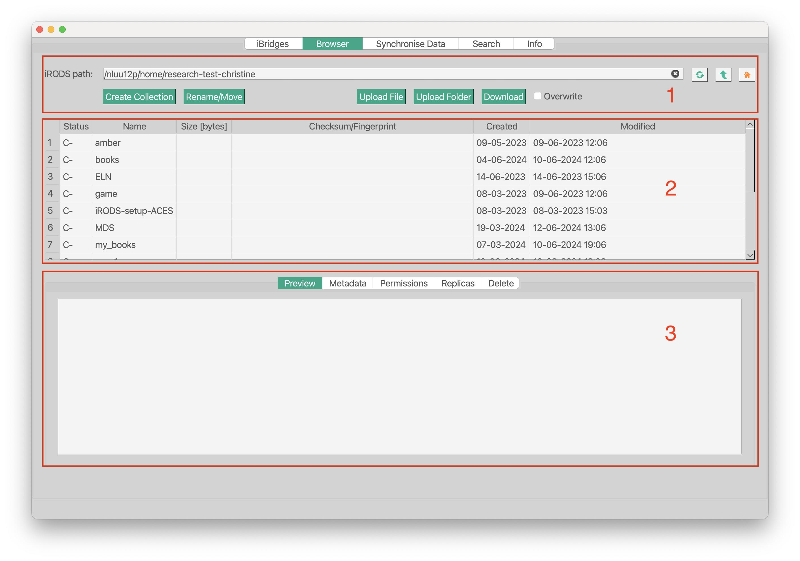
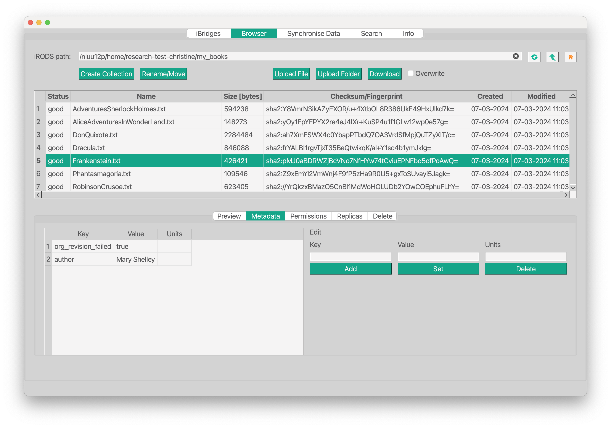
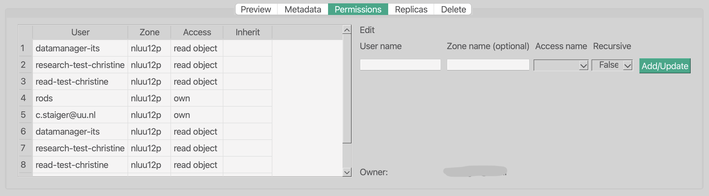
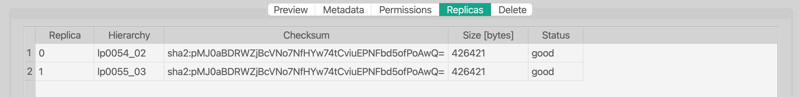
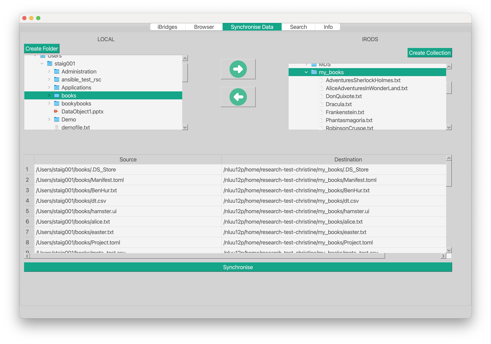
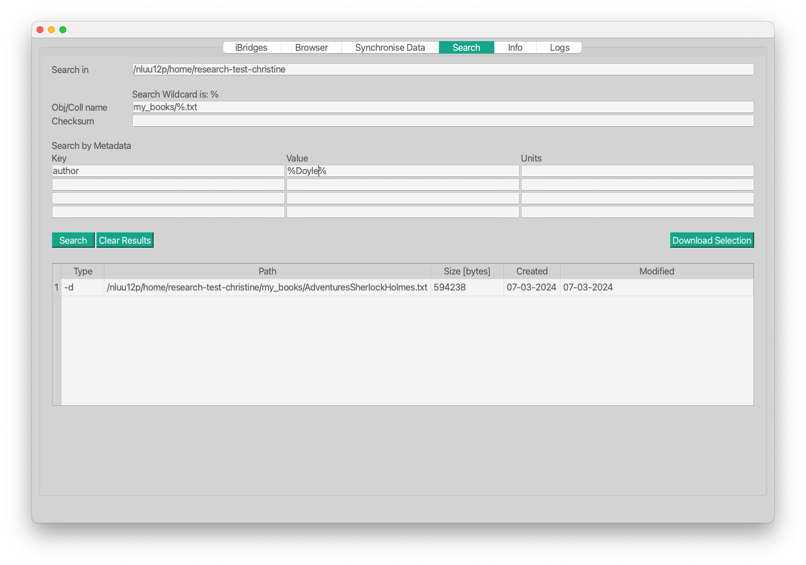

iBridges User Documentation
Synopsis
iBridges is a GUI for any data‑management platform based on iRODS. It exposes iRODS functionality through a graphical interface. The GUI groups related functionality into separate views, each representing a specific function area.
Default iBridges‑GUI views:
- Browser — browse iRODS collections, inspect data objects and collections, edit metadata and permissions, and delete data.
- Data Synchronisation — synchronise local directories with their corresponding iRODS collections.
- Search — search for data collections and objects.
- Info — summarises information such as the user’s role, groups, and the storage resources on the iRODS server, including their status and available capacity.
Views and Plugins
In the main menu (next to the configuration menu), you will find a drop‑down menu called “Views and Plugins”. Selecting or deselecting items in this menu will show or hide the corresponding tabs in the GUI. All checked tabs and plugins will automatically be restored in the next session.
On first launch, the default views Welcome, Browser, Synchronise Data, Search, Info, and Logs are shown.
Browsing through your iRODS collections
After logging into iRODS, the first view you see is the Browser. This view has three sections:
- Navigation
- Listing
- Detailed inspection of data objects and collections

Listing
The table below the navigation bar lists all collections and data objects in the current path.
Columns:
Status —
-Cfor collections, or the replica status for data objects.
If a data object’s status is notgood, the data is compromised. Contact your iRODS administrator. Do not use such data.Name — collection or data object name
Size — size in bytes
Checksum — a hash used to verify data integrity
Created / Modified — timestamps for creation and last modification
Single click loads details in the section below.
Double click on a collection navigates into it.
Inspect collections and data objects
This section shows detailed information about the selected item.
Preview — lists the contents of a collection or shows the first lines of text, JSON, or CSV files.
Metadata — displays iRODS metadata (key, value, units).
- Single click loads the metadata entry into the editable fields.
- To create metadata, fill in key, value, and units, then click
Add.
Multiple entries with the same key but different values are allowed. Updateupdates the current selected metadata entry.Deleteremoves the metadata entry matching the fields.

Permissions — shows access rights for the selected item.
The drop‑down menuAccess nameexposes the following rights:Rights/Action upload file write file delete file add metadata update metadata remove metadata delete_object ✅ also imkdir✅ ✅/❌ ✅ ❌ ✅ modify_object ✅ also imkdir✅ ✅/❌ ✅ ✅ ✅ create_object ❌ ❌ ❌ ✅ ✅ ✅ read_object ❌ ❌ ❌ ❌ ❌ ❌ 
The Creator label shows who created the selected item.
Collections support
inherit/noinherit.
inheritapplies the collection’s permissions to newly added items.To apply permission changes recursively to all existing members of a collection, enable
Recursive.Replicas — shows the storage resources where a data object is stored.
Collections have no replicas.
Replica information is mainly for sysadmins. If a replica status is not
good, send them this information.
Data Synchronisation
Synchronise Data provides tools to synchronise a local folder with an iRODS collection.
Synchronisation works both ways:
- Local → iRODS (right‑pointing arrow)
- iRODS → Local (left‑pointing arrow)
Before synchronisation, differences are calculated and shown in the text field below.
Note: calculating differences may take some time.

Synchronisation works only for collections/directories, not for single files.
Search
Search provides a form where you can enter path and metadata criteria.
Click Search to list matching collections and data objects.

Search fields
The path at the top defines where the search is performed.
It must exist; by default, your home collection is used.Obj/Coll namefilters by name.
Example: enteringdemofinds all items named demo.Example above: searching for all
*.txtobjects inmy_booksusingmy_books/%.txt.Metadata filters narrow results further.
Example: keyauthor, value containingDoyle→%Doyle%.Note: the wildcard is
%.
Search results
- Single click or Select all → click
Downloadto choose a destination and start downloading. - Double click → open the item in the
Browserfor further inspection.